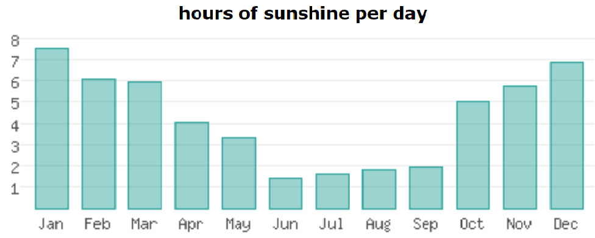

The climate of Meghalaya is generally mild. In August the mean temperature at Shillong (in the Khasi Hills) is low (about 21–23 °C); it falls to
about 8–10 °C in January.
One of the world’s wettest regions is found in Meghalaya—Cherrapunji, which has an average annual precipitation of about 450 inches (11,430 mm)
during monsoon season (from May to September).

(Rainfall at Cherrapunji may be exceeded, however, by that at Mawsynram, a village directly west of Cherrapunji, where rainfall totals of some
700 inches (17,800 mm) per year have been recorded.) Annual rainfall in Shillong, only about 50 miles (80 km) from Cherrapunji, is about 90
inches (2,290 mm). During the winter months (December to February), the climate is relatively dry.
In Meghalaya, summer is for a period of about 5 months, from May to September, with torrential rains caused by the South West Monsoon. The
entire plateau witness strong winds. This is due to northward migration of jet streams from the Gangetic plain to Tibetan plateau and
development of low pressure in the Tibetan plateau at this time of the year.